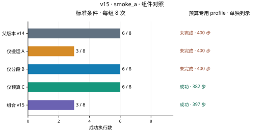
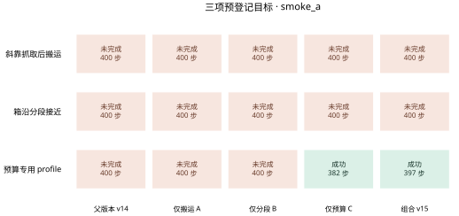

标准条件
预算专用 profile 0/1
最新完整阶段：smoke_a · 下列主数字仅统计标准条件，预算专用profile另列。
标准条件
标准条件
标准条件
标准条件
标准条件
完整阶段累计 45 次评估执行。同一条件在不同版本和修订中重复，9个小测试条件包括8个标准条件与1个复用起点的配置profile，不能写成9个独立起点。
规划证书、保存输入回放、物理回放和完整任务成功是不同证据。旧权重冻结；本轮不做泛化训练，也不写论文。
已知诊断案例，不能作为独立泛化结论。预算profile复用旧6000005，并保持五组父配置一致。
smoke_a斜靠目标从311到321步规划，占11步；327–396步转向共70步，其中回正34步、旋转36步。末帧角误差0.081448 rad、位置误差9.682 mm，仍未同时满足0.08 rad/9 mm。搬运期间保持稳定抓持，最小关节余量0.477321 rad；这里主要是延迟下回正与转向切换耗时，不是重新失抓。此外三个旧成功在carry与组合中退步，局部终点IK/路径未确认导致长搜索与重试；例如12000011首次搜索53步、723个工作单元。IK迭代未确认不能写成数学上的不可达。
下一步：暂不采用搬运A。后续独立修订应先限定无进展搜索和重复搜索的预算，检查局部IK的初值与候选顺序；再单测D2下回正/转向切换与提前制动，保留全部到位、碰撞和关节阈值。旧成功必须逐项保住后才能扩大测试。
smoke_a_carry_diagnosis.json · smoke_a_carry_rotation_diagnosis.json
smoke_a箱沿目标的分段路径通过静态检查并完成预平移，但首次旋转最多连续4帧同时满足原到位与开度要求，达不到5帧。第250步角误差已降到0.032294 rad，位置却漂到16.465 mm；随后按70步保护超时。该次旋转关节最小余量0.183844 rad，当前证据指向位置稳定性而非关节限位触发。第二次到385步才进入下降，只剩15步；第400步停在PATH_RECENTER，没有完成恢复抓取。
下一步：暂不采用分段B。下一轮只针对转向结束时的D2位置漂移检查制动与连续5帧联合确认，并在接受路径前为下降、闭合、搬运和释放预留预算；不能把4帧当5帧、扩大9mm容差或增加400步总预算。
smoke_a预算profile：父版本400步未完成，仅C382步成功，组合397步成功。这是同一旧起点的专用配置，不能折算为独立泛化成功；组合仍受搬运退步和箱沿超时影响。
下一步：保留C作为待确认候选。若以后继续，优先独立复核C是否保护全部旧成功，再按预登记顺序做更大消融和开发对照；本轮组合门槛失败，470/480/1440阶段停止。
预定 470 次；完整记录 0 次。
预定 480 次；完整记录 0 次。
预定 1440 次；完整记录 0 次。
开发共480次，分别为v14和v15各240次；独立确认须先冻结，再使用全新起点。未运行的数据不会填成结果。
| 阶段 | 成功数 / 执行数 | 门槛状态 | 原始依据 |
|---|---|---|---|
| smoke_a | 父版本 v14 6/9 · 仅搬运 A 3/9 · 仅分段 B 6/9 · 仅预算 C 7/9 · 组合 v15 4/9 | 结果门槛未通过 | 统计 · 条件 · 动作核验 · 物理回放 |
已通过的动作核验共 16,367 控制步；物理回放 45 回合、16,367 步。回放不增加成功率样本。
不把任意条件顺序连成趋势线，不对已知小测试附加泛化区间。每图提供600 dpi位图、矢量文件和绘图数据，来源哈希在图表目录中。


本页没有新增v15演示视频。查看v14原始对比演示 ↗，其中动作与结果仍属于历史v14实验，不能视为本轮成果。